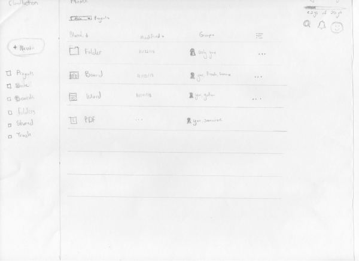
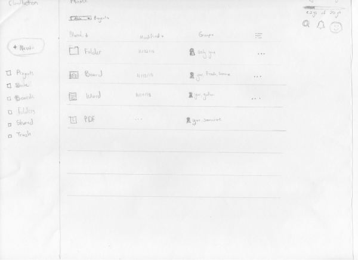
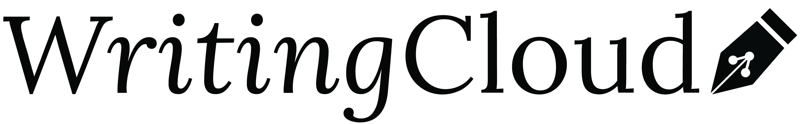

Overview
"I think all writing is a disease. You can't stop it." - William Carlos Williams
Currently there are 281 300 authors, writers, and editors employed in the United States. There are amateur writers working to break into journalism or selling a first novel. Writers who spend their free time spinning a tale for fun. Students learning the craft in creative and professional writing programs.
Cloud Storage is dominated by titans. Google. Microsoft. Dropbox. During my competitive research, I found their audience is anybody who needs to save something on the internet. An opportunity we found really cater to the needs of a particular audience, in this case - writers. WritingCloud meets the needs of its writers by giving them a place to write, collaborate, and research.
Challenge
Most cloud storages serve a diverse customer base. Focusing on a particular audience we could meet the needs of many users with similar needs and pain points. In the existing market, there is a frustration in collaboration among users who don't use the same platform, unclear file sharing, and greater need for a cooperative writing space. All of this can be accomplished with WritingCloud's intuitive dashboard.
Solution
Focusing on a specified audience means refining the tools for that cloud storage to fit specific needs. Easy to find button to upload files or create your latest writing project with a consistent action color throughout the design. Using an organization system that users are already familiar with using folders and files. While we have the image of the lonely writer holed up in an office, writing is collaborative. With editors, beta readers, writing groups, and publishers to work with - sharing individual files or projects is one of WritingCloud's primary features.
Competitive Analysis
I then performed a SWOT analysis on three main competitors in the space: Google, OneDrive, and Dropbox. Distilled down, I found gaps with each product.
Google Drive
Strength & Weaknesses
- Strength: Google's umbrella of services makes it easy to tranisiton between Drive and other Google services you use.
- Weakness: Difficulties sharing Drive files for users outside of the G-suite. Some users have reported problems with file or document syncing.

Dropbox
Strength & Weaknesses
- Strength: Dropbox's intuitive design makes it a popular cloud storage service that you can also use offline.
- Weakness: Simple design doesn't offer much by the way of native productivity apps.

One Drive
Strength & Weaknesses
- Strength: Has a cheaper home plan than Google and is a good choice for a user who has a subscription to Office 365.
- Weakness: Backup is not a feature. Data encryption is only for business clients. Often unreliable when needing to sync large amounts of data
User Surveys
I reached out to professional writers that I knew, student writers, amateur writers, and users on SurveyTandem. I received 39 responses. Our intended audience followed a few key patterns:
- Most people wrote outside of a cloud server, so they would need a way to upload their writing files.
- A number of users wanted the ability to interact with others in the cloud by leaving comments, chatting in real time, and editing shared documents.
- Out of the short answer questions about how users organized their research online or off, involved some sort of categorization method. Many people confessed they organized poorly. I needed to have a simple method of organization to meet the needs of the highly organized to the not-so organized.
82%
Felt it would be important to have the ability to share their writing files with others.
87%
Of users think it's important to backup their writing and associated research.
83%
Wanted the ability to leave editing marks and comments in collaboration on a project
90%
Of respondents used a word processor outside of a cloud server.
User Personas
Mike S.
Graduate Student / 35 / UK
GOALS
- Having a word processor that automatically saves his work to a cloud as he goes.
- Wants one place where he can access associated research with an assignment.
- Access across devices.
FRUSTRATIONS
He would like more collaborative features, like chat, editing marks, or a comments in a word processing feature. He's short on time so he needs to access his assignments across multiple devices.

Kiah M.
Aspiring Writer / 28 / Idaho
GOALS
- One place for research, notes, file folders and stories.
- Would like automatic back up for her work so she doesn't need to consistently save it.
- Wants to move handwritten notes online.
FRUSTRATIONS
Every cloud service has different features she likes. Would like to consolidate her creative writing and associated research into one place for organization and convenience.
Elle C.
Self-Published Author / 32 / Utah
GOALS
- She needs real time collaboration with her editors which would include chat, editor's marks, and comments. Also knowing who accessed the file and at what time.
- Automatic backup to her writing files.
FRUSTRATIONS
She needs an easy way to work with her editors as they work through the different drafts of her work.
User Flows
To detail out the specific content I needed to add, I wrote out user stories.

After mapping out the user stories, I converted the high priority stories into user flows.
Sign Up

Collaboration
Save a Web Link
Low Fidelity Wireframe
To visualize the data and ideas I had accumulated, I did rough sketches of every screen from each point in my user flows. Sketching potential layouts allowed for my ideas to come together and to analyze potential weak points quickly.
 

After performing some usability tests, I simplified the dashboard design and removed clutter. The folders needed to stand out in some way against the other files since users would reference folders more frequently, I adjusted the folders by bolding them to make this design feature accessible to all. The navigation on the left didn't need icons. They could stand on their own and the navigation needed to be simplified even more and reflect what I had initially built in my site map.
Branding
I had a few different ideas with the logo. Some marks I drew had books in them. When I showed the designs to someone else in the industry, she pointed out that books could represent school or education. This pushed me towards writing tools like a feather or pen, so I made two logo variations one featuring a quill and the other a pen.

The preference test yielded 60% in favor of the pen over the minimalist feather mark. Once I decided on the pen, I re-designed the logo a few times. My aim was to communicate the message of WritingCloud with the mark. The share logo is universally recognized so including this in the pen itself communicated the different ways WritingCloud could be used.

I narrowed down the typeface to two fonts: Lora for headings and Roboto for body text. Lora's serif-font style evokes the feeling of print while still maintaining a contemporary look. It could be used as a body font, keeping its readability high. Something I found important since more and more users simply scan a website instead of reading deeply.
Roboto's versatility made it the ideal body font. As needed I could italicize or bold at various levels to highlight certain information within the text.
Colors were kept soft. I pulled the orange for its association with creativity and is used on all action items and buttons. Teal pairs nicely with the orange and is used as a background color.
#222222
#F6F6F6
#A9CFB5
#FF9B6A
High Fidelity Mock Ups
After locking down the colors, typeface, and logo I refined the mock ups in Figma. I revamped the text editor by removing unfamiliar icons and spelling out certain links. The chat feature looked like a help window, so I added a "chat with friends" headline to clarify.
I performed preference tests on the color of the icons, with 86% of users perferring the orange icons.
Many similar changes occured over the course of various usability tests and asking industry professionals to review the screens and provide feedback.
Conclusion
What I Learned: Making assumptions about your audience will bog down your project and lead you in the wrong direction. Interacting with users as much as possible and getting feedback as early as possible will keep you on the right course. Here is what I would do if I could do this project again:
Updated User Survey: In my initial user survey I would've added more questions asking about moments of delight and pain points with their current cloud storage. While I had some of those questions, my focus was on what the client wanted and I needed to bring more balance to the client and our prospective audience.
More Testing Earlier On: Front loading your work can benefit you in the long run. During the low fidelity wire frame section, I would've down more usability testing and updated screens in that phase as well. I'd also be more flexible with what seemed to come naturally to users and build designs that way.